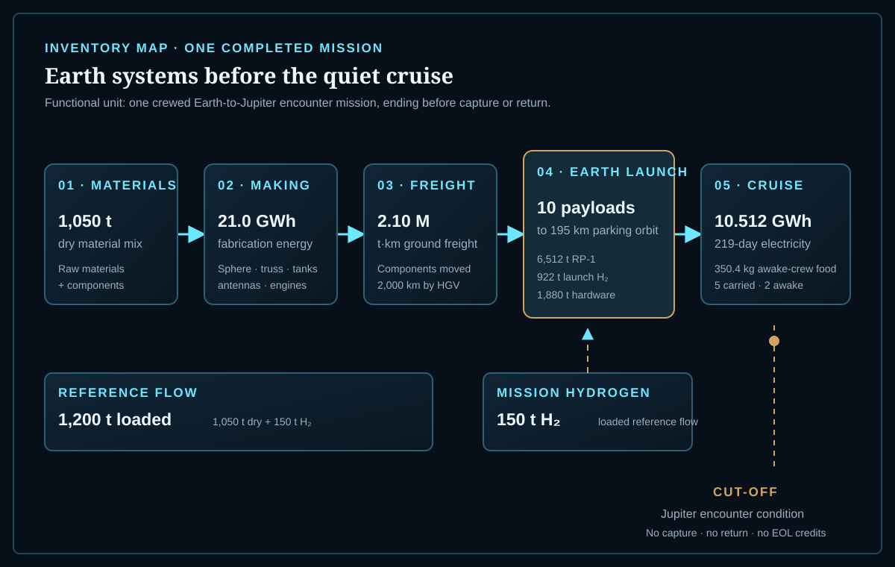
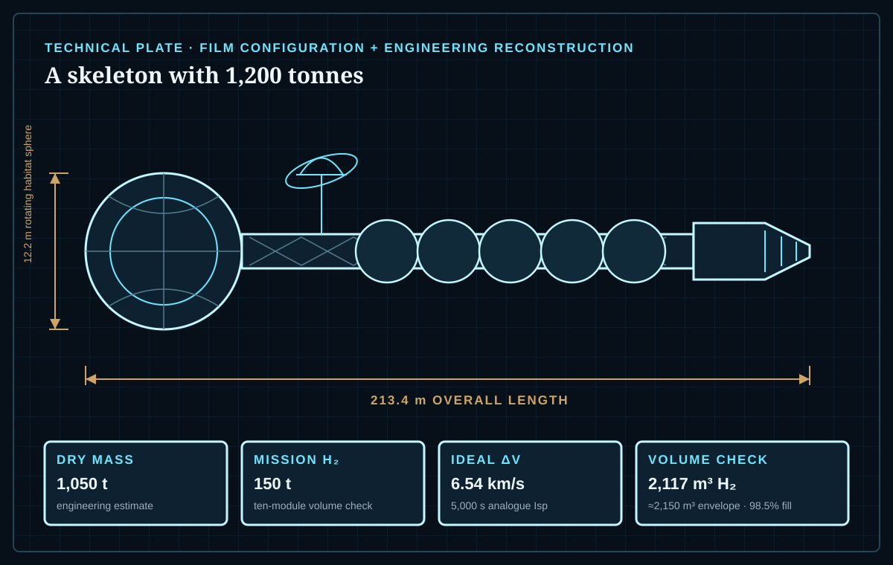
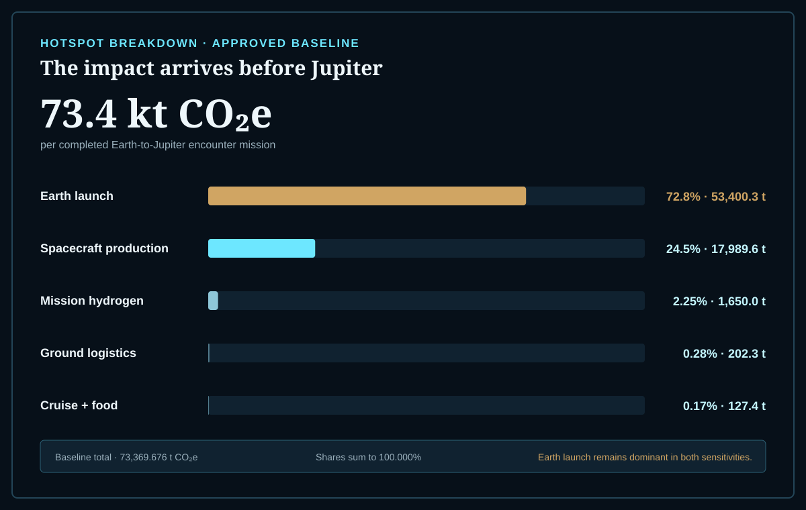

EPISODE #05 · SEASON I — MACHINES & WORLDS
Discovery One
What is the climate impact of completing one crewed Earth-to-Jupiter encounter mission — including the Earth systems needed to make departure possible?
Science fiction, reconstructed through life-cycle logic. Impossible technologies, reconstructed as traceable systems.
THE SUBJECT
A silent voyage. A heavy departure.
The approved episode reconstructs Discovery One as a 213.4 m crewed deep-space spacecraft carrying five people toward a Jupiter encounter. Its rotating habitat sphere is represented by a 12.2 m proxy, while the complete reference flow contains 1,050 t of dry spacecraft and 150 t of mission hydrogen.
The model ends at Jupiter encounter condition, without capture or Earth return. Film configuration, NASA context and declared engineering assumptions translate the ship into materials, fabrication, freight, launch, cruise electricity and provisions. No spectacular narrative event receives an emission flow unless a physical chain can be modelled.
213.4 m
Overall length in the approved film configuration.
1,200 t loaded
1,050 t dry spacecraft plus 150 t of mission hydrogen.
10 launches
Payload launches required to place the reference flow in parking orbit.
219 days
Development-scenario cruise to Jupiter encounter condition.
VISUAL MODEL
Earth systems before the quiet cruise
The approved reference flow connects spacecraft production and ground logistics to ten payload launches, mission hydrogen and the 219-day cruise.


DETAILED LIFE CYCLE INVENTORY
The reference flow, counted
Every quantity resolves to one completed mission. Contribution values reproduce the approved baseline without adding unsupported precision.
| Stage | Component / activity | Activity data | Climate change | Modelling basis |
|---|---|---|---|---|
| Raw materials + making | Dry material mix and spacecraft fabrication | 1,050 t dry mass · 21.0 GWh | 17,989.6 t CO₂e · 24.5% | High-spec metals, CFRP and electronics; fabrication of sphere, truss, tanks, antennas and engines. |
| Ground transport | Component freight | 2.10 M t·km | 202.3 t CO₂e · 0.28% | Components moved an average 2,000 km by HGV. |
| Mission fuel | Spacecraft hydrogen | 150 t H₂ | 1,650.0 t CO₂e · 2.25% | Natural-gas hydrogen baseline at 11 kg CO₂e/kg H₂. |
| Earth launch | Ten Saturn V-equivalent payload launches | 6,512 t RP-1 · 922 t H₂ · 1,880 t hardware | 53,400.3 t CO₂e · 72.8% | Launch fuel cycle, hydrogen, expendable hardware and launcher manufacturing. |
| Cruise | Electricity and awake-crew food | 10.512 GWh · 350.4 kg food | 127.4 t CO₂e · 0.17% | 2 MW average power for 219 days plus provisions for the awake crew. |
| Approved baseline total | 73,369.676 t CO₂e | 73.4 kt CO₂e per completed encounter mission. | ||
Reference flow
1,200 t loaded: 1,050 t dry spacecraft plus 150 t of mission hydrogen.
Propulsion check
6.54 km/s ideal Δv using a 5,000 s analogue specific impulse.
Tank-volume check
2,117 m³ of hydrogen within an approximately 2,150 m³ tank envelope: 98.5% aggregate fill.
Declared exclusions
R&D, capital facilities, upper-atmosphere non-CO₂ forcing, failure, extra boil-off, capture, return and end-of-life credits.
EMISSION FACTOR REGISTER
Factors with a name — and a limit
Factors are used only where activity, unit, geography, technology and boundary match, or the mismatch is disclosed.
| ID | Activity | Factor | Unit | Source / status |
|---|---|---|---|---|
| F01 | Primary aluminium | 9.1136 | kg CO₂e/kg | DEFRA 2026 · proxy |
| F02 | Primary steel | 2.8616 | kg CO₂e/kg | DEFRA 2026 · proxy |
| F03 | Primary titanium | 45.1 | kg CO₂e/kg | Literature |
| F04 | CFRP 65/35 | 20.17 | kg CO₂e/kg | Calculated literature blend |
| F05 | IT electrical items | 24.8655 | kg CO₂e/kg | DEFRA 2026 · proxy |
| F07 | Electricity consumed | 0.18436 | kg CO₂e/kWh | DEFRA composite |
| F08 | HGV >33 t, average laden | 0.09634 | kg CO₂e/t·km | DEFRA composite |
| F10 | Natural-gas hydrogen | 11 | kg CO₂e/kg H₂ | IEA midpoint |
| Additional | RP-1 proxy | 3.84016 | kg CO₂e/kg | Approved baseline factor |
| Additional | Nuclear electricity proxy | 0.012 | kg CO₂e/kWh | Approved baseline factor |
| Additional | Food and drink proxy | 3.70140 | kg CO₂e/kg | Approved baseline factor |
HOTSPOT
The impact arrives before Jupiter
Earth launch contributes 72.8% of the approved baseline. The quiet cruise and food contribute only 0.17%.

Baseline
73,369.676 t CO₂e
73.4 kt CO₂e per completed mission.
Earth launch
53,400.3 t · 72.8%
Launch is the system.
Spacecraft production
17,989.6 t · 24.5%
Dry materials and fabrication.
Cruise + food
127.4 t · 0.17%
Quiet, but not impact-free.
SENSITIVITY A · DRY MASS
Mass changes the answer in steps
800 t · 8 launches: 58.4 kt CO₂e · −20.5%.
1,050 t · 10 launches: 73.4 kt CO₂e · baseline.
1,500 t · 13 launches: 97.2 kt CO₂e · +32.5%.
Mission hydrogen remains fixed at 150 t and the mission service is unchanged. Every extra tonne can trigger materials, manufacturing and another whole launcher.
SENSITIVITY B · HYDROGEN SUPPLY
Hydrogen moves the total — not the hotspot
1 kg CO₂e/kg H₂: 62.6 kt CO₂e.
11 kg CO₂e/kg H₂: 73.4 kt CO₂e.
26 kg CO₂e/kg H₂: 89.5 kt CO₂e.
The 26.8 kt span applies the factor to mission and launch hydrogen together. Earth launch remains dominant in every tested case.
INTERPRETATION
The mission starts on Earth
A 1,200 t loaded reference flow requires ten launch-equivalents. The infrastructure that reaches parking orbit contributes 72.8%, while spacecraft production contributes a further 24.5%.
The 219-day cruise is not impact-free, but under the approved nuclear proxy it does not control the answer. Mass and the launch architecture do.
THE VERDICT
“The longest voyage begins with the mass we choose to launch.”